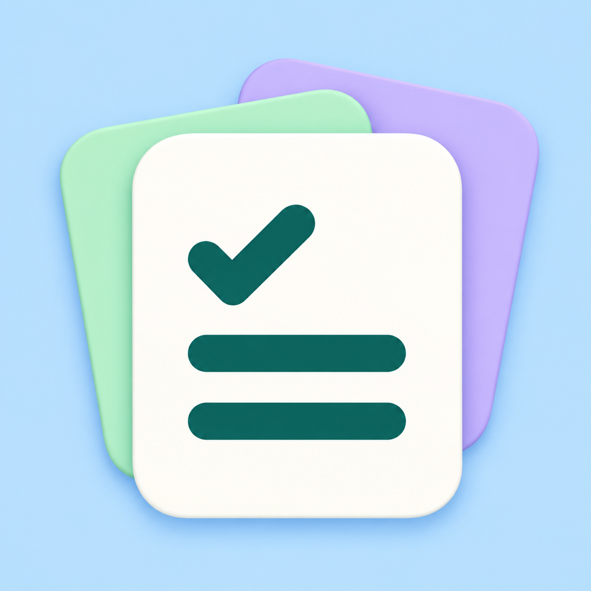

Little List
Grocery Planner for iPhone
A little less to remember on your grocery trips.
Keep a separate list for each shopping trip or destination. Quickly add what you need, check off what you buy, and pick up where you left off.
Your shopping, organized
Create and reorder lists, arrange your items, and add notes for the details you don’t want to forget. Edit or delete the current list from the … menu. On-device AI can assign groups automatically. Turn grouping on in the sort menu to organize To buy items; bought items stay together. Move items between lists, then swipe left on another item to quickly reuse the last destination. Open “Export” to copy the current list, all lists, or selected lists to the clipboard as Markdown, with checkboxes and notes. Export follows your selected sort order and includes group headings when grouping is on. Choose whether to include bought items. Turn on “Include in app badge” for the lists you choose to see their remaining To buy total on the app icon.
A little personality for your lists
New items and saved name changes automatically get an emoji using on-device AI. Turn off “Automatically enhance item names” or customize the Name prompt in Settings. Prompt changes save when you close Settings. Original names stay editable, and a sparkle marks enhanced names. AI item groups has its own automatic switch and customizable prompt in Settings. Groups are read-only on items. Requires iOS 26 or later with Apple Intelligence available.
Your lists, one shortcut away
Use Siri and Shortcuts to add items, see what’s left, and mark purchases bought. Build your own shortcuts to create a list, open a list, or export Markdown to another action. Choose a list for each action; new lists follow your default backup setting.